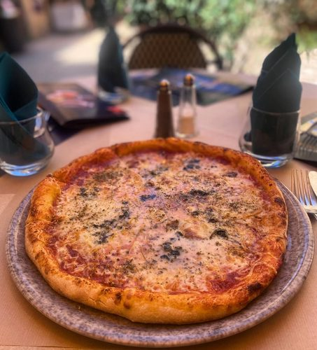

Niché au cœur de Sarlat-la-Canéda, Le Malraux est une adresse qui célèbre la gastronomie périgourdine dans toute son authenticité. Foie gras, confit de canard, noix du Périgord... chaque assiette raconte l'histoire d'un terroir généreux, préparée avec les produits du marché.
Terrasse fleurie en été, salle chaleureuse en hiver — Le Malraux est le lieu idéal pour un déjeuner en famille, un dîner romantique ou un repas entre amis.
🦆
Foie Gras Maison
Partenaire Layrisse Foie Gras, IGP Périgord
🌿
Produits Locaux
Marché de Sarlat & producteurs partenaires
🎂
Service Traiteur
Mariages, groupes et événements privés
🏡
Terrasse & Jardin
Cadre fleuri au cœur de la cité médiévale
Nos saveurs
La Carte
21,80€
Entrée + Plat + Dessert · Prix nets TTC Tous nos plats accompagnés de pommes de terre à la sarladaise
Entrées
Foie gras de canard mi-cuit fait maison
Et son chutney d'oignons
Pâté façon Périgourdin
Salade de gésiers d'oie
Salade de cabécou et ses noix du Périgord
Plats
Aiguillette de canard sauce cèpes
Parmentier de canard fait maison
Camembert rôti, jambon cru du Périgord
Frites, salade (+1,50€)
Anchaud Périgourdin
Coq au vin de Bergerac fait maison
Dessert
Dessert au choix sur la carte
24,80€
Entrée + Plat + Dessert · Prix nets TTC Tous nos plats accompagnés de pommes de terre à la sarladaise sauf le tartare de saumon qui est accompagné de frites
Entrées
Carpaccio de bœuf fait maison
Foie gras de canard mi-cuit fait maison
Et son chutney d'oignons
Salade sarladaise
Salade, tomate, gésiers d'oie, magret séché
Salade de cabécou et ses noix du Périgord
Escalope de foie gras poêlée et sa sauce Malraux
(+2,50€)
Jambon du Périgord
Plats
Demi-magret de canard sauce Malraux
Confit de canard
Pièce de bœuf
Tartare de saumon-avocat fait maison
Coq au vin de Bergerac fait maison
Cassoulet Périgourdin au confit de canard
Camembert rôti, jambon cru du Périgord
Frites, salade (option végé possible)
Dessert
Dessert au choix sur la carte
Supplément Rossini sur nos plats 5,00€
35,00€
Entrée + Plat + Dessert · Prix nets TTC · Produits premium Tous nos plats accompagnés de pommes de terre à la sarladaise sauf le saumon qui est accompagné de purée maison
Entrées premium
Duo de foie gras de canard
Foie gras de canard mi-cuit et escalope de foie gras poêlée (+2,50€)
Salade Périgourdine
Salade, tomate, gésiers d'oie, magret de canard séché, foie gras de canard mi-cuit fait maison et ses noix du Périgord
Tartare de saumon fait maison
Tomate d'antan, burrata, huile de truffe
Plats de caractère
Duo de canard
Demi-magret de canard et aiguillettes de canard, sauce cèpes
Filet de bœuf, escalope de foie gras poêlée
Sauce truffe (+5€)
Saumon sauce vierge
Côtelette d'Agneau sauce du chef
Dessert
Dessert au choix sur la carte
Nos Foies Gras
Foie gras de canard mi-cuit fait maison
19,00€
Escalope de foie gras de canard sauce Malraux
21,00€
Duo de foie gras de canard
Foie gras de canard mi-cuit et escalope de foie gras poêlée
Prix nets TTC · Les desserts ci-dessus sont disponibles avec un supplément de 5€ pour les menus
Nos Assiettes Spécialités
La Jacquou
Magret de canard entier, pommes de terre sarladaises, sauce truffe du chef, foie gras de canard fait maison
32,00€
Le Rossini
Filet de bœuf, escalope de foie gras poêlée façon Rossini, sauce Truffe
29,50€
La Cyrano
Confit de canard, pommes de terre sarladaises, sauce truffe, foie gras de canard fait maison
22,50€
La Montaigne
Salade verte, tomate, jambon noir du Périgord, pommes de terre sarladaises
15,50€
La Lagreze
Anchaud périgourdin froid, pommes de terre sarladaises, cabécou
16,50€
La Nordique
Tartare de saumon, avocat, salade verte, frites
18,50€
La Boétie
Pièce de bœuf, sauce truffe, pommes de terre sarladaises
19,50€
La Malraux
Confit de canard sauce cèpes, pommes de terre à la sarladaise, salade de gésiers, cabécou, pâté Périgourdin
21,50€
Le Camembert rôti
Camembert rôti, jambon du Périgord, frites
17,50€
Le Fish
Fish and chips, sauce tartare
16,00€
La Pêcheur
Saumon sauce vierge, purée maison
20,50€
Menu Enfant
Menu enfant
Tenders de poulet, Anchaud Périgourdin ou Jambon blanc · Frites ou pommes de terre à la sarladaise · Gâteau chocolat ou 1 boule de glace vanille ou chocolat
11,50€
Prix nets TTC · Tous nos plats sont accompagnés de pommes de terre à la sarladaise
L'Entre 2 s'installe là où Sarlat est le plus beau — face à la cathédrale Saint-Sacerdos, au carrefour des ruelles médiévales. Brasserie conviviale le midi, pizzeria festive le soir, L'Entre 2 accueille familles, groupes et amoureux du Périgord autour d'une cuisine généreuse et sincère.
Pizzas artisanales maison, foie gras IGP Périgord, grande carte brasserie — ici, chaque repas devient une fête au cœur de la cité médiévale.
🍕
Pizzas Artisanales
Pâte maison, garnitures fraîches
🦆
Foie Gras IGP Périgord
100% maison, label d'origine garantie
☀️
2 Terrasses Panoramiques
Vue cathédrale Saint-Sacerdos
🎉
Groupes Bienvenus
Menus de groupe, réservations longue date
21
Rue Albéric Cahuet

Nos créations
La Carte
25,50€
Menu L'Entre 2 — Entrée + Plat + Dessert · Prix nets TTC Tout fait maison · Label IGP Périgord
Entrées au choix
Foie gras de canard
Tataki de magret de canard
Tartare de saumon
Plats au choix
Confit de canard, sauce cèpes
Ravioles aux truffes et cèpes
Côte de cochon sauce moutardée à l'ancienne
Desserts au choix
Gâteau au chocolat
Gâteau aux noix
Prix nets TTC · Menu enfant 11,50€ : Tenders de poulet & frites ou Jambon blanc & frites + Gâteau au chocolat
Nos Entrées
Assiette apéro du Périgord
Jambon Noir du Périgord, rillettes, bloc de foie gras
17,00€
Foie gras de canard maison & chutney d'oignons
18,00€
Escalopes de foie gras de canard poêlées sur toasts et sauce framboise
18,00€
Nos Grandes Salades
Salade "L'Entre 2"
Mesclun, burrata, jambon noir du Périgord, coppa du Périgord, tomates séchées, olives noires et huile de truffe
19,50€
Salade Cabécou
Mesclun, cabécou, miel, noix, tomates cerises et oignons rouges
☀️ 2 terrasses face à la cathédrale
♿ Accès PMR disponible
🐾 Animaux bienvenus en terrasse
👨👩👧 Groupes bienvenus · Menus dédiés
🌿 Label IGP Périgord · Tout fait maison
Souvent complet
Réservez votre table
Nous vous conseillons de réserver à l'avance pour profiter pleinement de votre moment au cœur de la cité médiévale.
Appelez-nous06 73 27 44 27ou contactez-nous sur Instagram @l.entre2